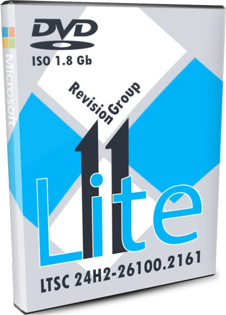
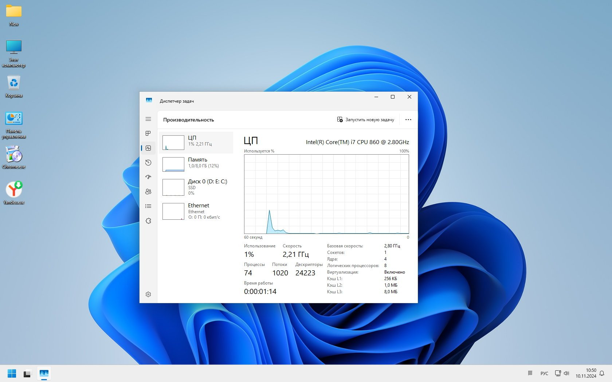
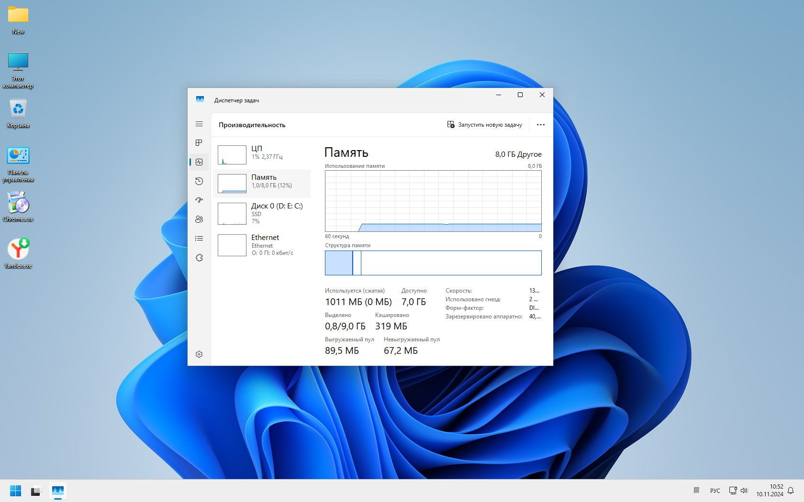
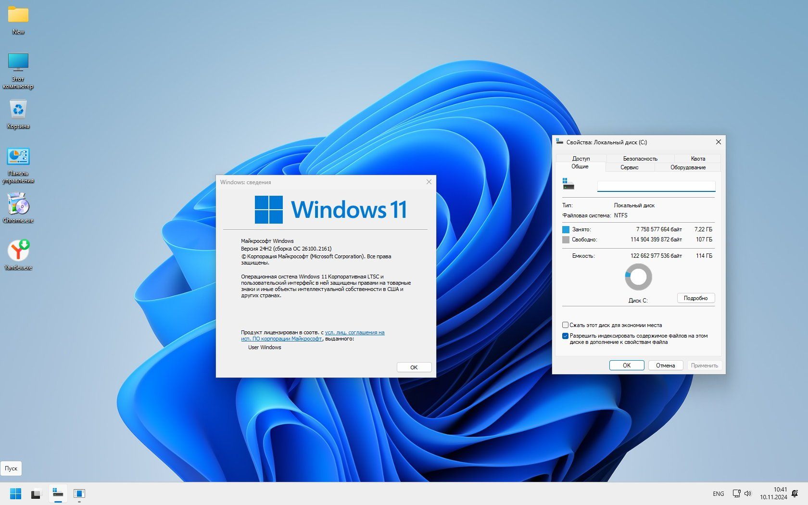
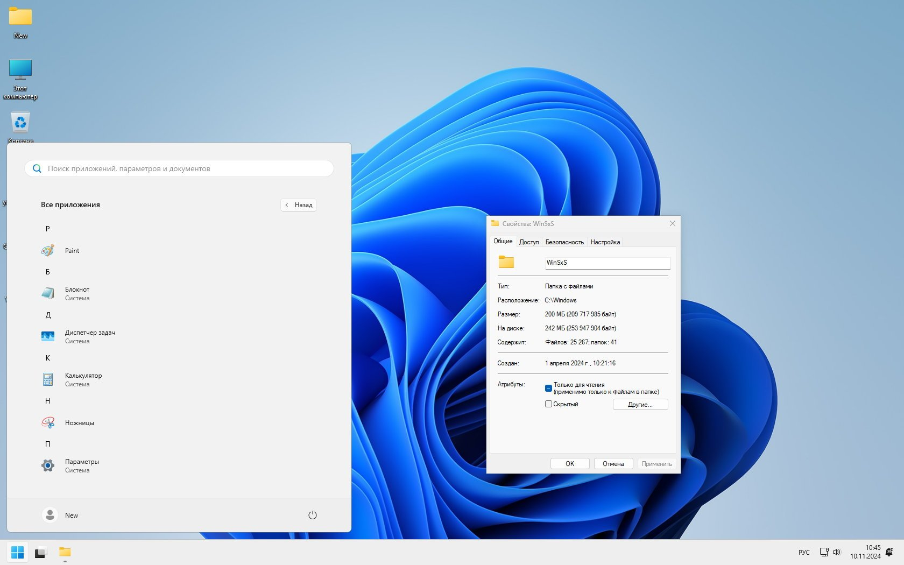
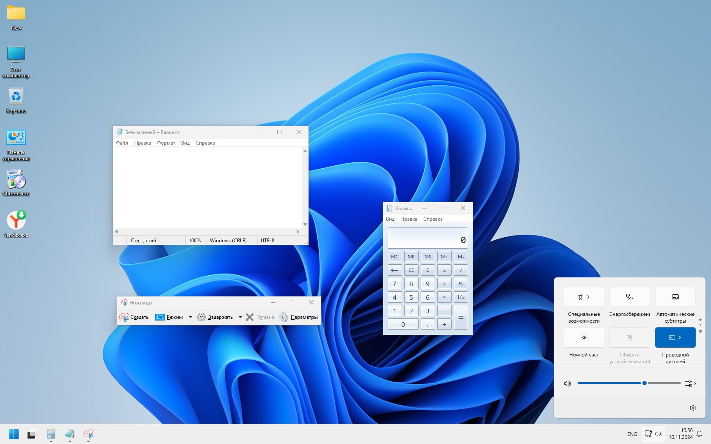

Windows 11 LTSC 24H2 ru самая быстрая lite сборка 1.80 ГБ для игр

Суперлегкая сборка на основе новейшей Windows 11 LTSC 24H2 rus, созданная специалистами by Revision Group, скачать iso образ 1.80 ГБ через торрент. Главное преимущество данной сборки - максимально возможное быстродействие для версии 24H2.
По просьбам посетителей – создана первая супер-лайт сборка Windows 11 LTSC 24H2 – командой by Revision. Обрезанная система, которая обновляться не будет (хотя винда попытается запустить WinUpdate первой же перезагрузки – но у нее это не получится). С Виндовс 11 сложнее делать супер-лайт сборки, чем с 10-ки, т.к. компонентов у нее больше, а разрешений – меньше. Кроме того, в версии 24H2 добавлены многие новые компоненты в систему, и приходилось очень аккуратно вырезать хлам, чтобы не задеть что-то важное в системе.
Судя по тестам, система получилась такой, какой она задумывалась – легкой, маленькой и практичной. Сборка работает гораздо быстрее, чем громоздкий оригинал LTSC 24H2, т.к. была проведена очень мощная оптимизация – ориентированная на повышение быстродействия. Поэтому система должна особенно подойти любителям игр, которым разный мусорный хлам от Майкрософт не требуется абсолютно.
Нужно также помнить, что супер-лайт сборки – всегда самые незащищенные, т.к. создаются для скорости и легкости. Именно поэтому такая конфигурация больше рекомендована опытным пользователям, - а не тем, кто скачивает из Интернета всё подряд и устанавливает на свой ПК. Все важные защитные механизмы в данной сборке by Revision запрещены, заблокированы либо вообще вырезаны. Поэтому для долговечной, стабильной и безопасной работы этой системы устанавливайте на нее только проверенный софт. Также советуем именно предложенный здесь в описании активатор, а не какие-либо альтернативные варианты. По тестам – сборка реально очень легкая и прекрасно проявляет себя в играх.
{kind=link}

{kind=link}

{kind=link}

{kind=link}

{kind=link}

Суперлегкая системная конфигурация
-Вырезаны/выключены/заблокированы Файерволл, Смартскрин, Защитник. Удален SecHealthUI. Выключена изоляция ядра. Убрано всё, что мешает игровому быстродействию.
-Оставлены только важные и нужные Компоненты Виндовс (см. соответствующий скрин). По многочисленным просьбам мы решили включать Framework 3.5, DirectPlay и SMB 1.0 в суперлайт-сборки. Все эти важные компоненты тут есть.
-WinSxS урезана. Для систем, которые не могут обновляться, эта папка с хламом не нужна, поэтому в ней лишь самые необходимые файлы оставлены – от всего громоздкого кэша Виндовс.
-Почищены задания Планировщика (от всех ненужных из них).
-В сборке нет многочисленной телеметрии винды 11.
-UAC в режиме автосоглашения. Если вообще выключить UAC, то система еще легче будет «летать».
-Тщательно настроены службы, а нежелательные из них удалены вообще.
-Не старайтесь как-то использовать Магазин, Поиск, Виджеты – это всё вырезано/заблокировано, а важные компоненты Поиска и индексирования вообще отсутствуют в системе. Поэтому сразу после установки можете отключить это поле Поиска с Панели задач.
-Сборка не рассчитана на то, что вы будете использовать учетку Microsoft. Только локальная учетная запись.
-По умолчанию (по вашим просьбам) имя пользователя – New (то есть, на латинице), а не Администратор (на кириллице). Это небольшое улучшение окажется очень полезным для некоторых игр, которые не распознают кириллические названия и не могут поэтому сохранять сейвы нормально.
-Файл подкачки ограничен на 1 ГБ! Так что, если такой размер подкачки для вашего ПК окажется маленьким, то укажите его побольше или вообще включите автоопределение размера подкачки самой системой. Некоторые сборщики вообще выключают подкачку - но это не универсальный и нерекомендованный твик. Поэтому подкачка здесь зафиксирована на 1 ГБ – и это подойдет для подавляющего большинства пользователей.
-Игровые дополнения VC++/DirectX в данной сборке не встроены. Скачивайте их отдельно (внизу описания) и устанавливайте, если они вам нужны.
-Эдж вырезан, но предложены установщики альтернативных браузеров. Так что устанавливайте либо их, либо ваш предпочтительный браузер. Edge Chromium вырезан на корню – вместе с его сопутствующими сервисами.
-Использован оптимизированный загрузчик/установщик, и при запуске установки с флешки нужно несколько секунд подождать, чтоб запустилась установка.
-Сборка заточена на максимальное игровое быстродействие. Кстати, в современном цифровом пространстве нередко встречаются игры (а также античиты), которые могут потребовать наличие некоторых вырезанных компонентов (либо сервисов Майкрософт). Но то, что вырезано из этой системы – вернуть обратно не получится. Поэтому, если суперлайт конфиг не устраивает – то всегда есть оригинальный образ, в котором весь нужный хлам на месте.
ВНИМАНИЕ! Некоторые важные особенности сборки
-После того, как вы систему установите и захотите перезагрузить ПК, Виндовс будет пытаться запустить свой WinUpdate и несколько раз сама перезагрузит ПК. После этого система напишет, что невозможно запустить свое обновление и больше не будет пытаться это делать. То есть, на это даже не нужно обращать внимание, и нужно помниться, что обновляться эта система не может.
-Нет ярлыка Командной строки – ни в меню Пуск, ни в «Инструментах Windows». Поэтому, если вам нужна Командная строка – откройте папку Windows\System32 и создайте ярлык для cmd.exe на Рабочем столе или в другом нужном расположении.
Дополнительная информация
Мы сохранили скрипты для создания этой системы, и наверняка в будущем что-то можно будет улучшить в дальнейших суперлайт сборках. Поэтому очень желательно, чтобы вы описывали какие-либо найденные недочеты в сборке – чтобы специалисты by Revision улучшали конфигурацию – в последующих версиях. Как видите, мы прислушиваемся к вашим полезным рекомендациях и многие ваши просьбы реализовываем в суперлайт сборках. В ISO образах допускается установщик браузера и некоторые пользовательские изменения по умолчнию для браузера Chrome, каждый может без проблем изменить настройки браузера на свои предпочтительные. Все авторские сборки перед публикацией на сайте, проходят проверку на вирусы. ISO образ открывается через dism, и всё содержимое сканируется антивирусом на вредоносные файлы.